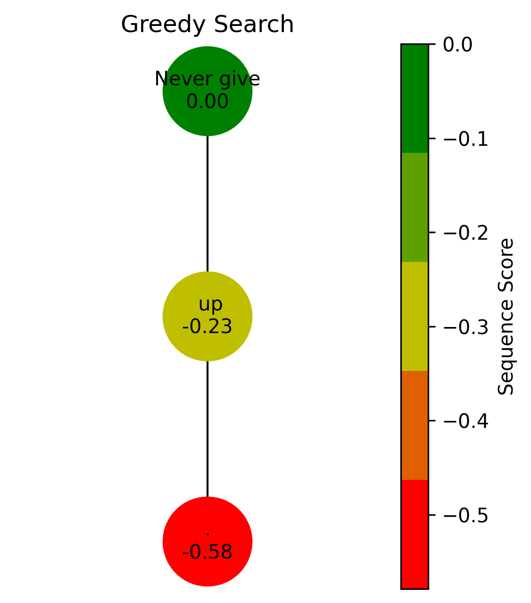

Decoding Strategies: Greedy vs Beam#
Reference: https://mlabonne.github.io/blog/posts/2023-06-07-Decoding_strategies.html
import torch
import torch.nn.functional as F
import numpy as np
import networkx as nx
import matplotlib.pyplot as plt
from matplotlib.colors import LinearSegmentedColormap, Normalize
from transformers import AutoTokenizer, AutoModelForCausalLM
np.random.seed(47)
torch.manual_seed(47)
device = 'cuda' if torch.cuda.is_available() else 'cpu'
model_name = 'gpt2'
tokenizer = AutoTokenizer.from_pretrained(model_name)
model = AutoModelForCausalLM.from_pretrained(model_name).to(device)
/home/aim/anaconda3/envs/book/lib/python3.10/site-packages/tqdm/auto.py:21: TqdmWarning: IProgress not found. Please update jupyter and ipywidgets. See https://ipywidgets.readthedocs.io/en/stable/user_install.html
from .autonotebook import tqdm as notebook_tqdm
def get_log_probability(logits, token_id):
"""Calculate log probability for a token."""
probs = F.softmax(logits, dim=-1)
log_probs = torch.log(probs)
return log_probs[token_id].item()
def plot_search_tree(graph, num_tokens_to_generate, beam_width, title="Search Tree"):
"""Visualize search results as a tree."""
fig, ax = plt.subplots(figsize=(3 + 1.15 * beam_width**num_tokens_to_generate,
max(5, 2 + num_tokens_to_generate)),
dpi=300)
pos = nx.nx_agraph.graphviz_layout(graph, prog='dot')
scores = [data['sequencescore'] for _, data in graph.nodes(data=True)]
norm = Normalize(vmin=min(scores), vmax=max(scores))
cmap = LinearSegmentedColormap.from_list('rg', ['r', 'y', 'g'], N=5)
nx.draw_networkx_nodes(graph, pos, node_size=2000, node_color=scores, cmap=cmap)
nx.draw_networkx_edges(graph, pos)
labels = {node: f"{data['token'].split('_')[0]}\n{data['sequencescore']:.2f}"
for node, data in graph.nodes(data=True)}
nx.draw_networkx_labels(graph, pos, labels=labels, font_size=10)
plt.title(title)
plt.box(False)
sm = plt.cm.ScalarMappable(cmap=cmap, norm=norm)
fig.colorbar(sm, ax=ax, pad=0, label='Sequence Score')
fig.savefig(f'{title}.png', dpi=300)
plt.show()
def greedy_search(input_ids, start_node, num_tokens_to_generate=1):
"""Implement greedy search."""
current_node = start_node
cumulative_score = 0
for i in range(num_tokens_to_generate):
logits = model(input_ids).logits[0, -1, :]
next_token_id = torch.argmax(logits)
score = get_log_probability(logits, next_token_id)
next_token = tokenizer.decode(next_token_id, skip_special_tokens=True)
input_ids = torch.hstack([input_ids, next_token_id[None, None]])
current_node = list(graph.successors(current_node))[0]
cumulative_score += score
graph.nodes[current_node].update({
'sequencescore': cumulative_score / len(input_ids.squeeze()),
'token': next_token + f'_{num_tokens_to_generate - i}'
})
return input_ids
def beam_search(input_ids, start_node, num_tokens_to_generate, beam_width):
"""Implement beam search."""
stack = [(input_ids, start_node, num_tokens_to_generate, 0)]
while stack:
current_input_ids, node, tokens_remaining, cumulative_score = stack.pop()
if tokens_remaining == 0:
continue
logits = model(current_input_ids).logits[0, -1, :]
top_token_ids = torch.topk(logits, beam_width).indices
for i in range(len(top_token_ids)-1, -1, -1):
next_token_id = top_token_ids[i]
score = get_log_probability(logits, next_token_id)
new_score = cumulative_score + score
new_input_ids = torch.hstack([current_input_ids, next_token_id[None, None]])
token = tokenizer.decode(next_token_id, skip_special_tokens=True)
current_node = list(graph.successors(node))[i]
graph.nodes[current_node].update({
'sequencescore': new_score / len(new_input_ids.squeeze()),
'token': token + f'_{tokens_remaining}_{i}'
})
stack.append((new_input_ids, current_node, tokens_remaining-1, new_score))
def get_sequence(G, node=None):
"""Get the sequence from root to given node (or best leaf)."""
if node is None:
leaf_nodes = [n for n in G.nodes() if G.out_degree(n) == 0]
node = max(leaf_nodes, key=lambda n: G.nodes[n]['sequencescore'])
path = nx.shortest_path(G, source=0, target=node)
sequence = ''.join([G.nodes[n]['token'].split('_')[0] for n in path])
return sequence
text = "Never give"
input_ids = tokenizer.encode(text, return_tensors='pt').to(device)
num_tokens_to_generate = 2
beam_width = 2
# Run Greedy Search
graph_greedy = nx.balanced_tree(1, num_tokens_to_generate, create_using=nx.DiGraph())
for node in graph_greedy.nodes:
graph_greedy.nodes[node].update({
'sequencescore': 0,
'token': text
})
graph = graph_greedy
greedy_output = greedy_search(input_ids, 0, num_tokens_to_generate)
plot_search_tree(graph_greedy, num_tokens_to_generate, 1, "Greedy Search")

# Run Beam Search
graph_beam = nx.balanced_tree(beam_width, num_tokens_to_generate, create_using=nx.DiGraph())
for node in graph_beam.nodes:
graph_beam.nodes[node].update({
'sequencescore': 0,
'token': text
})
graph = graph_beam
beam_search(input_ids, 0, num_tokens_to_generate, beam_width)
plot_search_tree(graph_beam, num_tokens_to_generate, beam_width, "Beam Search")
print("Greedy search output:", get_sequence(graph_greedy))
print("Beam search output:", get_sequence(graph_beam))

Greedy search output: Never give up.
Beam search output: Never give up.